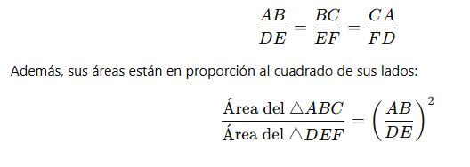
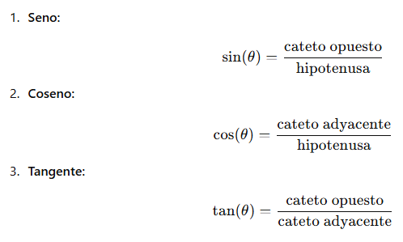

Las proporciones y razones en los triángulos son herramientas esenciales en geometría para establecer relaciones entre lados, ángulos y segmentos en diversas configuraciones. Estas proporciones están presentes en triángulos semejantes, triángulos rectángulos y divisiones dentro de los triángulos.
Triángulos semejantes
Dos triángulos son semejantes si tienen:
Ángulos iguales (AAA): Los triángulos tienen sus tres ángulos correspondientes iguales.
Lados proporcionales (LAL o LLL): Los lados correspondientes están en la misma proporción.
Proporción en triángulos semejantes
Si dos triángulos △ABC∼△DEF entonces:

Proporciones en triángulos rectángulos
Los triángulos rectángulos tienen relaciones métricas particulares que generan proporciones importantes:
a) Razones trigonométricas
Para un ángulo θ, las proporciones entre los lados son:

Teorema de la altura
En un triángulo rectángulo, la altura h relativa a la hipotenusa divide al triángulo en dos triángulos semejantes al original y entre sí:

Donde m y n son los segmentos en que la altura divide a la hipotenusa.
Proporción entre los lados y segmentos:

Proporciones en la bisectriz interna
En un triángulo cualquiera, la bisectriz interna divide el lado opuesto en dos segmentos proporcionales a los otros dos lados del triángulo:

Razones del baricentro
El baricentro G de un triángulo divide cada mediana en una proporción 2:1:

Donde M,N,P son los puntos medios de los lados opuestos.
Relación entre el perímetro y los lados
En triángulos semejantes, el perímetro es proporcional a los lados:

Razones entre áreas
La razón entre las áreas de dos triángulos semejantes es el cuadrado de la razón de sus lados correspondientes: